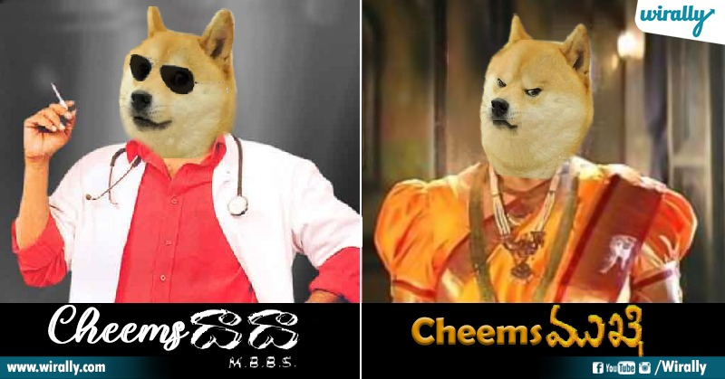

Summary:
happy to share that the course offered by
angelia yu was osm looking forward to make
most of the course.
Education:
- Bachelor's from Aditya Engineering college - (2020 - 2023)
- From Mechanical Engineering - 8.01 CGPA
- Diploma from Giet Polytechnic College - (2017 - 2020)
- From Mechanical Engineering - 79.5%
- Schooling from Surya deep em school - 2017
Work Experience:
- Working in aditya degree college as a techincal trainer in the field of Ai & Robotics
Skills:
- Python
- R lang
- Machine learning
Awards:
- Enduku evi enduku bane vunamu kadha bane chesukuntunamu kadha
Contact me